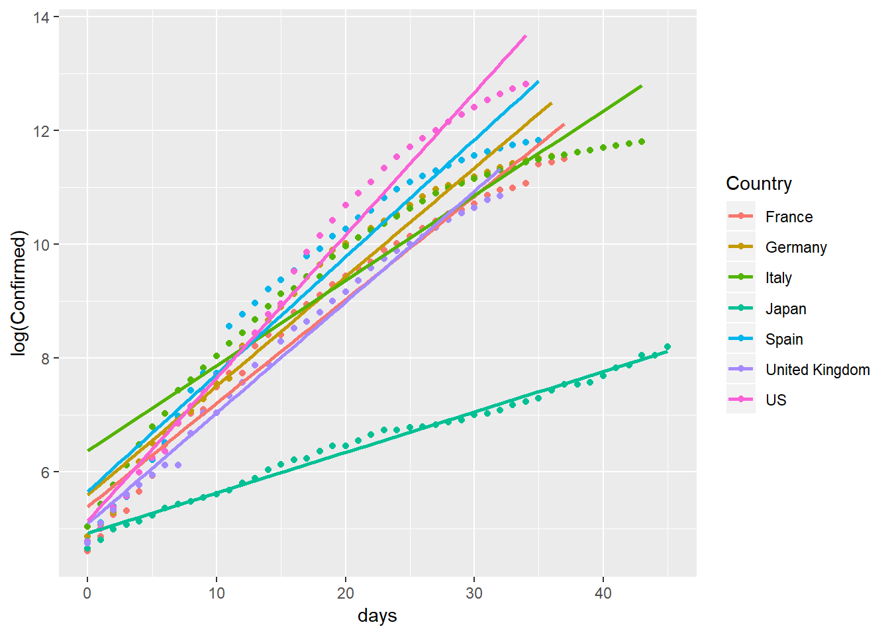
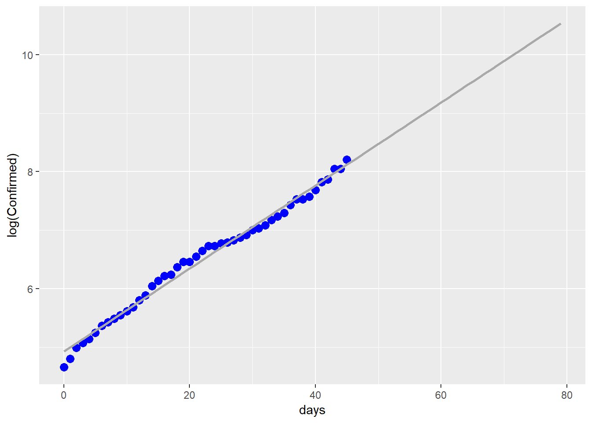
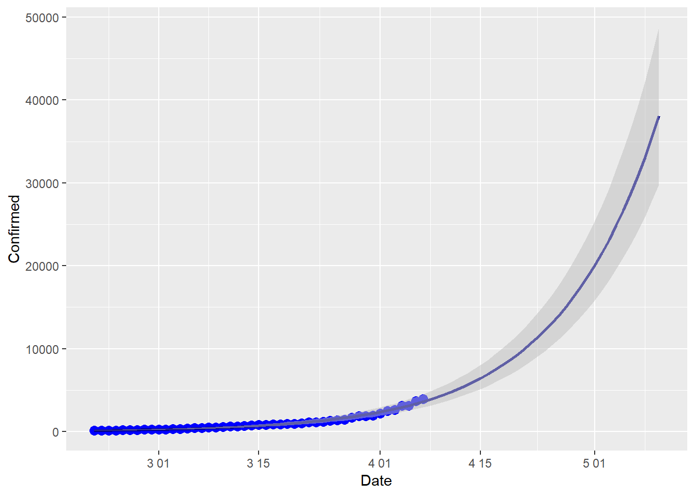

感染上位国の感染者数増加率
感染者数の増加を、イタリア、スペイン、アメリカ、フランス、イギリス、イギリス（感染者数上位国） と日本とを比較する。
モデルは次の通りである。感染者数 \(y_t\) を日付 \(t\) に対する増加関数と考える。すなわち、時間増分\(dt\)当たりの感染者数の増分は\(dy_t\)であり、ここで感染者数の増加率を \(dy_t/dt \over y_t\) と表す。感染者数の増加率を一定\(b\)と仮定する。このとき、次式が成立する。 \[ {dy_t/dt \over y_t} =b \] ただし、\(b>0\)である。 以上は \[ {dy_t \over y_t} =bdt \] を満たすため、両辺を積分すれば次が得られる。 \[ \int {dy_t \over y_t} =\int bdt+C \] ただし、\(C\)は不定積分の定数である、\(t,y_t\)の積分範囲は、\(0<t \leq T\)に対して \(y_0 < y_t \leq y_T\) である。これに従い定積分すれば、以上は次のように求められる： \[ \log y_T -\log y_0 =bT \] このとき、特定時刻\(T\)について\(y_T\)を次のように表現できる。 \[ y_T=y_0 \exp(bT) \] 時間の経過で増加する感染者数の初期値\(y_0\)に対し、\(T\)時間が経過後の感染者数は\(y_T\)である。この式を適用が許されれば、 \(\log y_T=\log y_0+bt\) と変換できる。\(b\)は増加率を表し、\(\log y_T\)と\(T\) との間に直線関係が見られれば、およそ増加率は一定と考えてよい。
時間経過と感染者数の対数値
ジョンズホプキンス大学のデータを用いる。ここでは感染者数が100人を超えた時点を\(t=0\)、その値を\(y_0\)とする。
rm(list=ls())
library(tidyverse)
url_csv <- 'https://raw.githubusercontent.com/datasets/covid-19/master/data/time-series-19-covid-combined.csv'
c19 <- read_csv(url(url_csv))
c19a<-filter(c19,`Country/Region` %in%
c("Italy","US","Spain","Germany","Japan","France","United Kingdom") & is.na(`Province/State`))
select(c19a,-c(3:5))->c19a
rename(c19a,Country=`Country/Region`)->c19a
filter(c19a,Confirmed>99)->c19b
c19b%>%group_by(Country)%>%mutate(days=Date-min(Date))->c19b
ggplot(data=c19b,aes(x=days,y=log(Confirmed),col=Country))+geom_point()+geom_smooth(method=lm,se=F)
感染者数の対数と（感染者が100人を超えた日からの）経過日数との関係は、概ね直線に近い。ただし、イタリア、スペイン、アメリカでは30日を過ぎたあたりで傾きの低下が見られる。また、日本はイタリア、スペイン、アメリカ、フランス、イギリス、イギリスと比べ、傾きが著しく低い。
欧米の感染増加率の推定
以上の図からは、欧米（以上の6国）と日本とで経過時間に対する感染者数対数の傾きが大きく違うことが分かる。そのため、まず欧米のみのデータで\(b\)の値を推定する。以下はその結果である。
library(plm)
c19b <- c19b %>% ungroup()
filter(c19b,Country!="Japan")->c19c
c19p<-pdata.frame(c19c,index=c("Country","Date"))
plm(log(Confirmed)~days,data=c19p,model="within")->mf
summary(mf)## Oneway (individual) effect Within Model
##
## Call:
## plm(formula = log(Confirmed) ~ days, data = c19p, model = "within")
##
## Unbalanced Panel: n = 6, T = 33-44, N = 223
##
## Residuals:
## Min. 1st Qu. Median 3rd Qu. Max.
## -1.84979 -0.34789 0.10270 0.45815 0.79941
##
## Coefficients:
## Estimate Std. Error t-value Pr(>|t|)
## days 0.1889147 0.0034651 54.52 < 2.2e-16 ***
## ---
## Signif. codes: 0 '***' 0.001 '**' 0.01 '*' 0.05 '.' 0.1 ' ' 1
##
## Total Sum of Squares: 1008
## Residual Sum of Squares: 68.285
## R-Squared: 0.93225
## Adj. R-Squared: 0.93037
## F-statistic: 2972.39 on 1 and 216 DF, p-value: < 2.22e-16推定結果では、増加率\(b\)の推定値は0.19であり、過去のデータから平均的には毎日19パーセントの勢いで新規感染者が増えていると考えられる。
# 日本の感染増加率の推定
次いで、日本のデータに限って\(b\)の推定を行う。推定結果は次の通りである。
c19j<-filter(c19b,Country=="Japan")
lm(log(Confirmed)~days,data=c19j)->mj
summary(mj)##
## Call:
## lm(formula = log(Confirmed) ~ days, data = c19j)
##
## Residuals:
## Min 1Q Median 3Q Max
## -0.27089 -0.07220 -0.01655 0.08174 0.18582
##
## Coefficients:
## Estimate Std. Error t value Pr(>|t|)
## (Intercept) 4.924854 0.030281 162.64 <2e-16 ***
## days 0.071012 0.001159 61.27 <2e-16 ***
## ---
## Signif. codes: 0 '***' 0.001 '**' 0.01 '*' 0.05 '.' 0.1 ' ' 1
##
## Residual standard error: 0.1044 on 44 degrees of freedom
## Multiple R-squared: 0.9884, Adjusted R-squared: 0.9882
## F-statistic: 3753 on 1 and 44 DF, p-value: < 2.2e-16日本のデータからは、感染者数の増加率\(b\)は0.07と推定される。これは欧米の4割程度の大きさであり、その理由は私には分からない。日本人と欧米人との間に社会動態の違いがあるか、あるいは欧米に比べ日本の検査数が少ないことと関係するのか、いくつか探るべき理由はあると思われる。
日本の感染者数の増加予測
日本のデータについて、以上の推定結果を用い、5月10日までの感染者数の増加予測を行う。
newd<-data.frame(Date=seq(as.Date("2020-02-21"),
as.Date("2020-05-10"), by="days"))
newd$days<-newd$Date-min(newd$Date)
predict(mj, newdata = newd,interval="prediction")->pp
cbind.data.frame(newd,pp)->newd
ggplot(data=c19j,aes(x=days,y=log(Confirmed)))+
geom_point(size=3,color="blue")+
geom_line(data=newd,aes(x=days,y=fit),size=1,color="darkgrey")
ggplot()+
geom_point(data=c19j,aes(x=Date,y=Confirmed),size=3,color="blue")+
geom_line(data=newd,aes(x=Date,y=exp(fit)),size=1,color="darkblue")+
geom_ribbon(data=newd,fill="grey",alpha=0.5, aes(x=Date,ymin=exp(lwr),ymax=exp(upr))) 
一つ目の図は、感染者数の対数のままで、過去のデータ点と上で推定された\(b\)の値で求めた直線を描いたものである。二つ目の図は、対数を外した感染者数の予測を誤差とともに示したものである。
社会行動が昨日までと変わらず、明日以降も同様であると仮定する。このとき、以上の増加率に関する推定結果から、ゴールデンウィーク明けには感染者数累計は4万人程度に増加すると予測できる。自治体の規制により\(b\)の低下を誘導できるならば、即日手を打った方がよい。